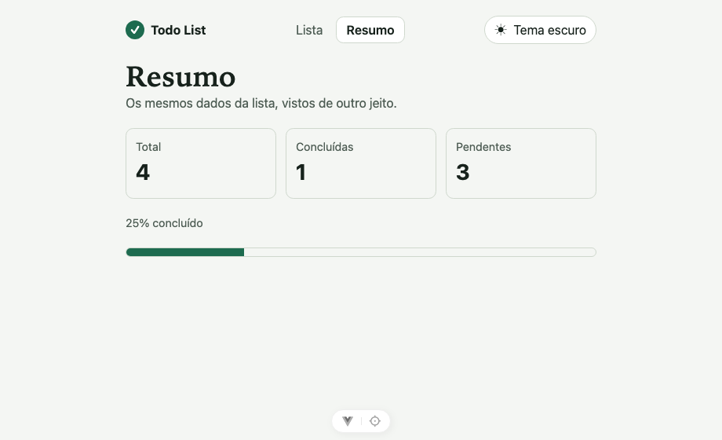
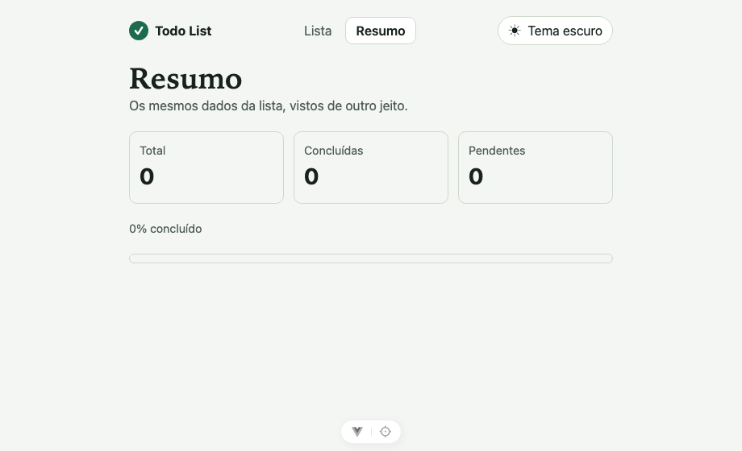

O composable já era uma store
Abram o useTarefas.js da etapa 20. Estado compartilhado, valores derivados, funções que alteram o estado. É uma store — só que sem nome, sem ferramenta e sem ninguém olhando. Hoje ela ganha as três coisas.
| Critério | Evidência |
|---|---|
| Nada quebrou | A aplicação funciona exatamente como na etapa 20 |
| A store existe | Vue DevTools › Pinia mostra tarefas com estado e getters |
| Reatividade preservada | Explicar por que o storeToRefs é necessário |
const { tarefas } = useTarefasStore() e a tela mostrar
tarefas.length, o que acontece quando a API responde e a lista muda?
defineStore: três diferenças e nada mais
const tarefas = ref([]) // FORA da função
const concluidas = computed(…)
export function useTarefas() {
return { tarefas, concluidas, carregar }
}export const useTarefasStore = defineStore('tarefas', () => {
const tarefas = ref([]) // DENTRO da função
const concluidas = computed(…)
async function carregar() { … }
return { tarefas, concluidas, carregar }
})Os refs voltaram para dentro da função porque agora é o Pinia que garante que ela roda uma vez. Era isso que a gente estava fazendo à mão.
| Parte | No código |
|---|---|
| state | ref |
| getters | computed |
| actions | funções |
app.use(createPinia()) no main.js)const store = useTarefasStore()
const { tarefas, concluidas } = storeToRefs(store) // ESTADO
const { carregar, adicionar } = store // ACTIONSEsta forma, com uma função, é a setup store; a outra, com { state, getters, actions }, é a do material.
O que se ganha: o painel do DevTools
$ npm install pinia
// main.js
import { createPinia } from 'pinia'
createApp(App).use(createPinia()).use(router).mount('#app')Sem o createPinia(), chamar a store dá erro: ela não tem onde morar.
tarefas
├─ state
│ ├─ tarefas: Array(4)
│ ├─ carregando: false
│ ├─ erro: ""
│ └─ busca: ""
└─ getters
├─ concluidas: 1
└─ visiveis: Array(4)Os valores são editáveis ali mesmo: mude busca no painel e veja a lista filtrar.

A aplicação funciona igual à etapa 20. Essa é a primeira evidência.
O Pinia não acrescenta poder: acrescenta visibilidade. Nada aqui muda o que o programa faz; muda o que você consegue ver quando ele faz errado.
ObserveAltere busca pelo painel do DevTools. A lista filtra. Por que isso funciona?
Prática: converter o composable em store
- Ponto de partida
- A sua cópia da etapa 20. A pasta da etapa 21 já traz a solução.
- 1
npm install piniae.use(createPinia())nomain.js.- 2
- Mova
composables/useTarefas.jsparastores/tarefas.js; embrulhe emdefineStore('tarefas', () => { … })com os refs dentro. - 3
- Nas três views,
storeToRefspara estado e getters; actions direto da store. - Evidência
- Tudo funciona igual, e a store aparece no DevTools.
Dica 1
A função privada combinaSituacao não precisa ir no return. O que não é devolvido não entra na store — e some do DevTools, que é bom.
Dica 2
Se a tela congelar com os valores iniciais, olhe a linha em que você desestruturou.
Mostrar solução (após a tentativa)
export const useTarefasStore = defineStore('tarefas', () => {
const tarefas = ref([])
const concluidas = computed(() =>
tarefas.value.filter((t) => t.concluida).length)
async function carregar() { … }
return { tarefas, concluidas, carregar }
})// na view
const store = useTarefasStore()
const { tarefas, concluidas } = storeToRefs(store)
const { carregar } = storePor que trocar algo que já funcionava
| Composable | Store | |
|---|---|---|
| Estado compartilhado | sim | sim |
| Aparece no DevTools | não | sim |
| Histórico de alterações | não | sim |
| Nome e identidade | não | sim |
| Recriar nos testes | difícil | fácil |
Nada disso muda o que o programa faz. Muda o que você consegue ver quando ele faz errado — e o que o próximo a mexer no código vai entender.
A tríade que o material original cita, e que vale para qualquer store:
- O estado — a fonte da verdade que move a aplicação
- A visão — um mapeamento declarativo do estado
- As ações — as formas possíveis de o estado mudar
Reparem que vocês já faziam os três desde a etapa 09: ref, template e funções. O Pinia não inventou o modelo — deu nome a ele e pôs uma janela para olhar.
Investigação: a tela que congela em zero

const { tarefas, concluidas } = useTarefasStore() — sem
storeToRefs. Abrindo /resumo direto, com
4 tarefas na API.
Total no Resumo : 0 (com storeToRefs: 4)
Percentual : 0% (com storeToRefs: 25%)
Tarefas na API : 4
Avisos no Console : NENHUMPor que acontece — e por que é cruel
Desestruturar copia o valor do momento. Na criação da tela, tarefas é [] — e a cópia fica assim para sempre. Pior: sair e voltar conserta, porque o componente é recriado. O defeito só aparece para quem abre a tela direto pelo endereço.
storeToRefs devolve um ref para cada campo, em vez do valor. Actions não precisam: funções não são reativas.
Pesquisar: setup store × options store
Pinia tem duas formas de declarar store: a "options store"
({ state, getters, actions }) e a "setup store" (uma função).
Compare as duas, citando a documentação oficial:
1. o que cada uma oferece que a outra não;
2. por que `this` existe numa e não na outra;
3. quando a documentação recomenda cada uma.
Meu projeto usa Vue 3 com <script setup> em todo lugar.| A resposta deve dizer | Sinal de resposta ruim |
|---|---|
| As duas produzem a mesma store | Diz que uma é “a certa” |
Setup store não tem $reset pronto | Não menciona (é a etapa 22) |
Setup store permite watch e composables dentro | Não cita nenhuma vantagem concreta |
| A escolha é de consistência com o projeto | “Options é mais organizada”, sem critério |
Onde conferir
O material da unidade usa a options store. Saber ler as duas é parte do trabalho — a internet está cheia das duas.
Verificação sem IA
- O que o Pinia acrescenta a um composable que já compartilhava estado?
- Por que os
refvoltaram para dentro da função? - Por que
storeToRefsno estado e não nas actions?